Introduction
Standard is the most commonly played of the three major constructed formats, Standard, Modern, and Legacy. Standard is unique in that of these formats, it is the only constantly evolving one, as the pool of legal cards is constantly changing. Whereas Legacy can use cards throughout the 25 year history of the game, and modern can use cards from the past 14 years, Standard is limited only to the cards printed in the most recent 2 years. Most cards released in new sets that will have any constructed applications will make the marks in Standard. Because only cards from the past 2 years are legal in standard, every September, with the release of the fall set, is what is known as rotation, with cards that are now too old becoming illegal in standard. This is a little bit hard to conceptualize so here is a diagram that attempts to explain it:
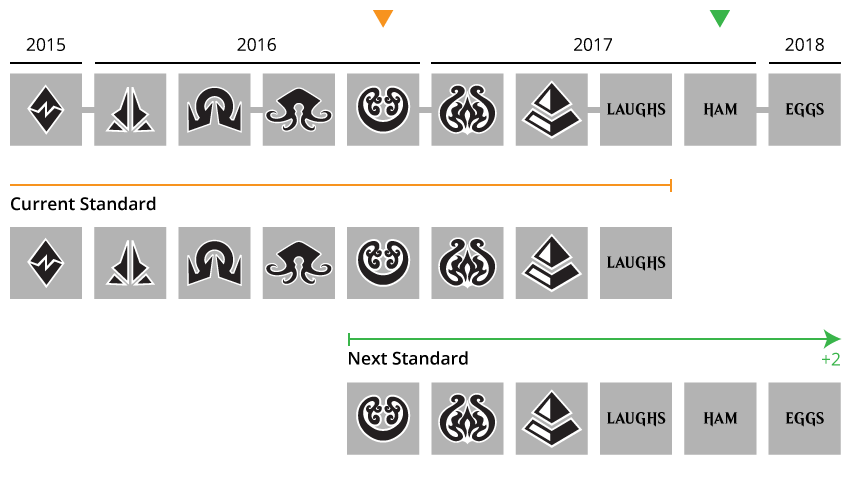This makes standard not only the most popular format, but also the most volatile; each new expansion has the potential to completely shake up the meta game, introducing new strategies and making others completely obsolete. Here we will be examining some of the most common trends for cards that see significant play in Standard, both before and after their rotation. We'll also be examining which cards in Ixalan I believe will follow each of these trends in the future.
Hyped Cards
The pre-release card reveal period is one of great anticipation for most Magic players. During this time, as the cards in the new expansion are revealed one by one, players theorize how the new cards will affect the metagame and the current strongest decks. There are times when the hype that is generated during this period has a massive effect on the value of a card on the secondary market. Generally, as people attempt to get ahead of price spikes after tournaments finally begin, pre-release prices are higher than post-release prices, but there are some very extreme examples of this.
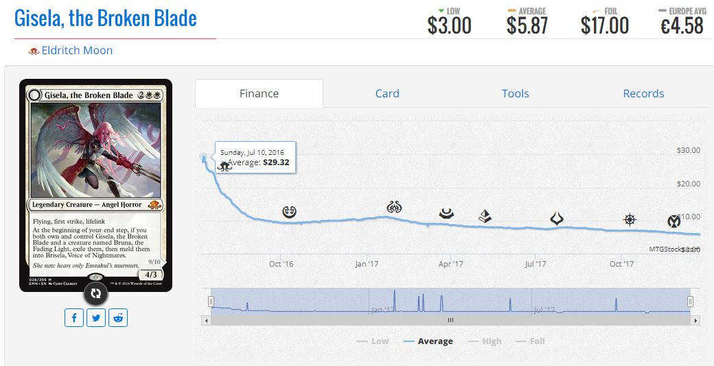Everyone, from professional players to the most casual of players anticipated Gisela to be one of the best cards of the upcoming Standard format, and they hype created a pre-order price of nearly $30.00. These predictions came to be unfounded, as the card ended up being played in very few Standard decks, and its value has been decreasing to its current price of $5.00 since. Some other examples of cards that fell victim to this are Pain Seer and Aurelia's Fury.
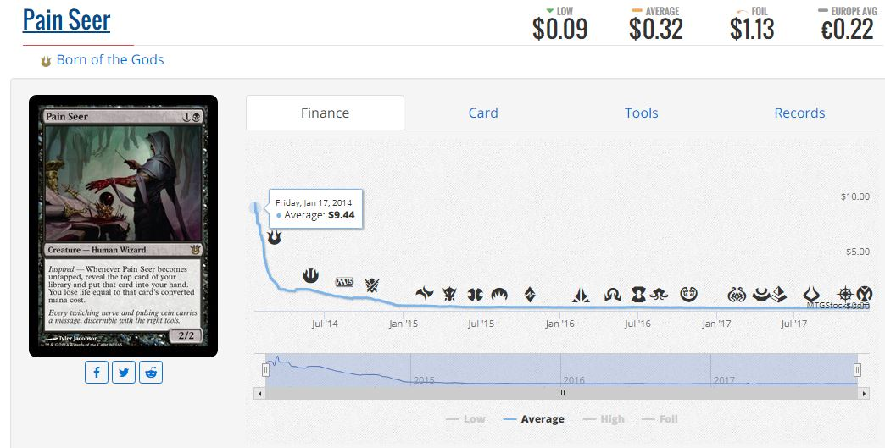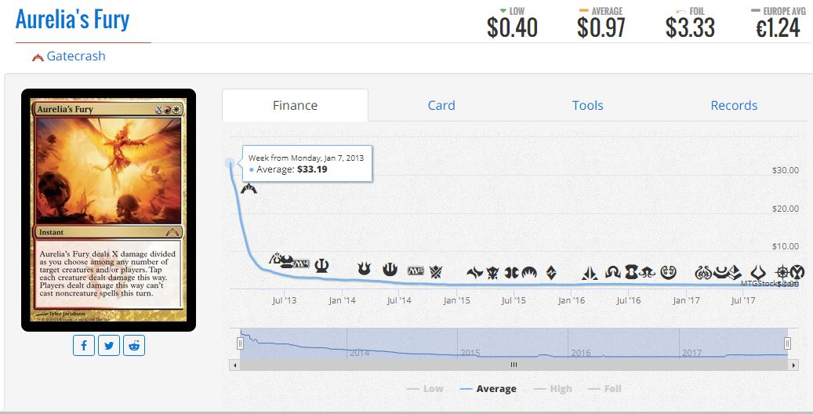
In Ixalan, it is beginning to look like the most hyped card of the set, Carnage Tyrant, could result in a similar flop. With many professional players anticipating it to be the best card in the set, it preordered for nearly $30.00, but has not seen as much play as expected and has been falling since its release to its current price of $15.00. In a similar vein, Regisaur Alpha, which would also have been an integral part of a Carnage Tyrant deck, has not seen any results and has fallen to 1/6th of its preorder price of $12.00.
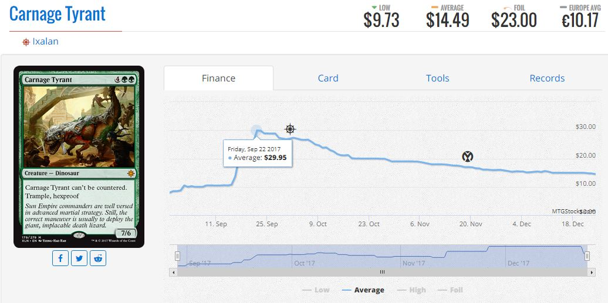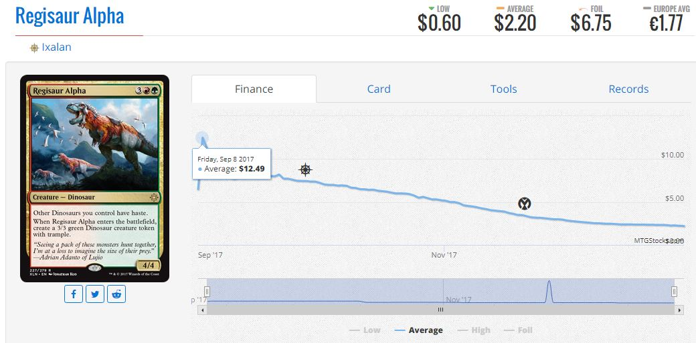
However, it would be irresponsible to completely write these cards off as junk; as we’ll soon come to see, the quickly changing nature of Standard can make cards previously thought of as unplayable spike in price in a matter of days.
Hidden Gems
As evidenced by the improperly hyped cards such as Gisela, people’s initial evaluations are often incorrect. However, whereas Gisela was overrated, some cards are massively underrated, resulting in price spikes almost as soon as they are released. An example of this is the dismal rating by critics of Jace, Vryn’s Prodigy in the set Magic: Origins. In the cycle of 5 “flip walkers,” one in each color, Jace was rated by far the worst, and was preordering for the lowest price of all of them at around $12.00. It will go down in history as one of the most inaccurate predictions of all time, and Jace went on to become the most expensive standard card in years, peaking at $92.00 due to its extensive play in Standard, Modern, and Legacy.
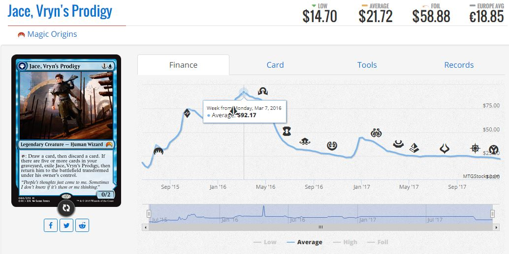Another example of this price spike after release is Nahiri, the Harbinger.
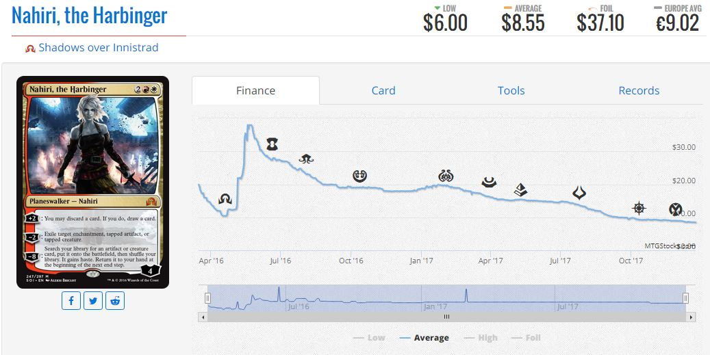You may notice that after these post-release price spikes, the price of cards begins to decay. This is a fairly common phenomena caused by the tournament results in the first week new expansions are available; people who want to get ahead of a price trend will closely monitor what professional players are playing in tournaments and attempt to buy cards they believe will spike. This can work in their favor if they sell off the cards they speculated on immediately following their spike, but as they supply of a set increases over time and initial hype dies down as the metagame refines, the cards tend to fall in price. This is being seen in Ixalan with the card Hostage Taker, which spiked due to excellent results in the first tournaments of the expansion, but has been taken out of decks since.
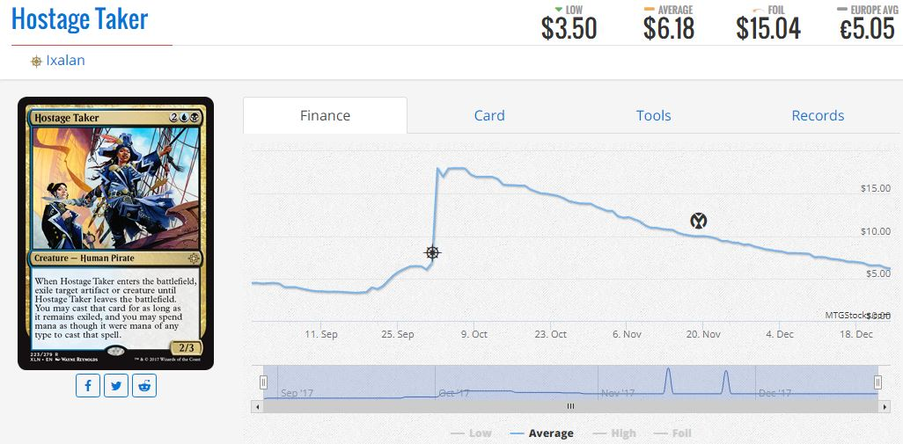There is another category of hidden gems, which are cards that are not seen as playable at the start of their standard cycle, but as new cards are released and others are removed from standard, they become more relevant, and thus increase in value.
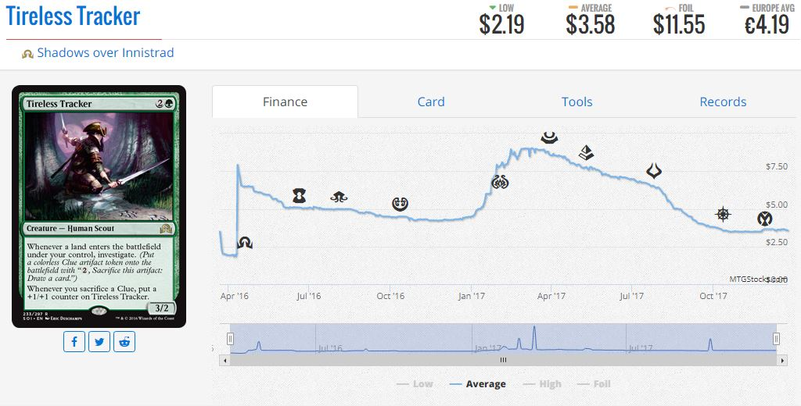Tireless Tracker was a card that saw some, but not a lot of play upon its introduction into the format, but after other additions to the green midrange decks in Standard and Modern came about, its price increased for the rest of its tenure in Standard. There are many cards that do not fulfill their potential until later in their standard careers similar to Tireless Tracker. Many of these cards are synergy based ones that do not have the support to make it in a deck until more cards of its theme are added in future sets. For instance, Ghostfire Blade in Khans of Tarkir was not played at all until Eldrazi decks that could support the card were introduced in the next block Battle for Zendikar.
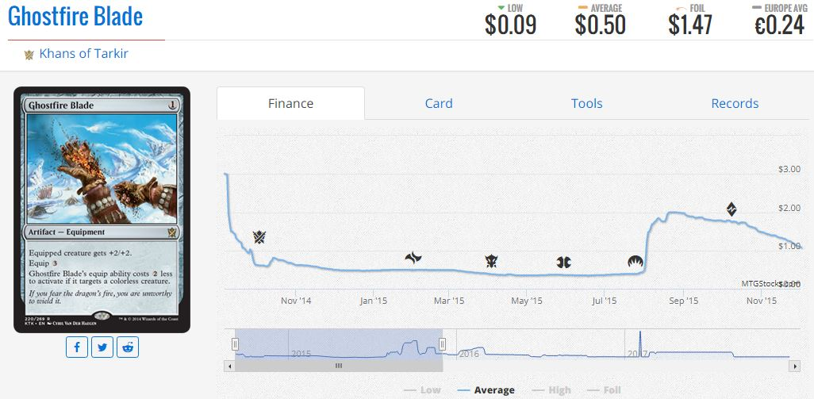A prime candidate for this trend in Ixalan would be the previously mentioned card Regisaur Alpha, which has great baseline stats, but additional synergy with other Dinosaurs. With the next set due to introduce even more Dinosaurs and Dinosaur synergy cards, we could see Regisaur Alpha get additional support and become a powerhouse in standard.
Rotation
Unfortunately, once most standard all-star cards run their 2 year course in the standard cycle, they become all but obsolete. The baseline power level to be playable in eternal formats is so much higher than it is in standard that most cards just don’t make the cut. This results in both a pre-rotation sell craze and a post-rotation price crash that is characteristic of so many powerful standard cards. With each rotation, the date at which standard cards begin to decline in price gets earlier and earlier as people try to get ahead of the curve and sell their standard playables before they crash in value. Cards that saw a lot of standard play but see no eternal and very little casual play all display this trait when they rotate. Examples of this include Deathmist Raptor, a great creature that wouldn't make the cut in modern, and Hero's Downfall, the most efficient removal spell in its standard cycle but is outclassed by other options in eternal formats.
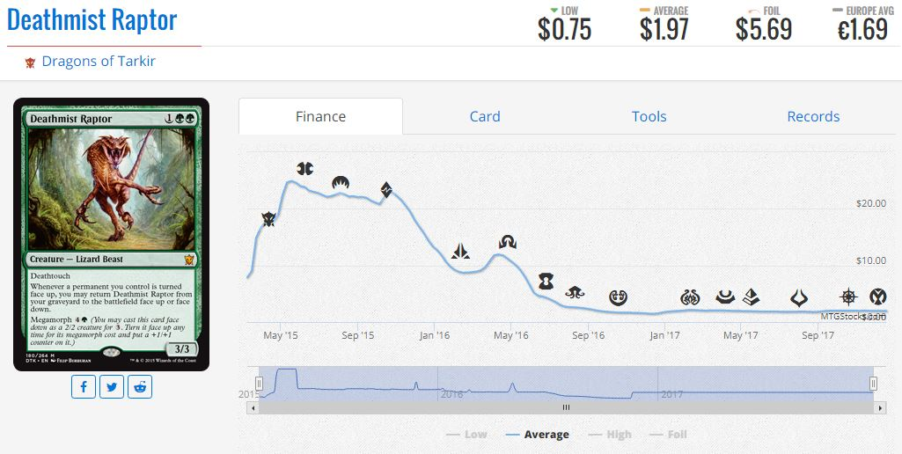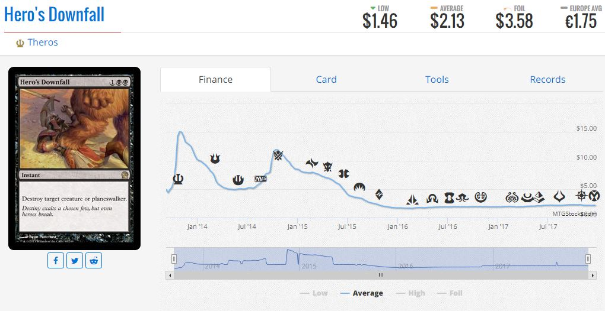
This occurs to almost every standard playable card in some form. While they may not be as exaggerated as the examples of Deathmist Raptor or Hero’s Downfall, most Standard playable cards go through some form of pre order over or under rating, a price increase or decrease due to the introduction of new sets, and finally a price decrease when the card is about to rotate. It is pretty fair to say that with a few exceptions, this trend will continue with the cards in Ixalan.
Copyright 2017 Ian Rickles